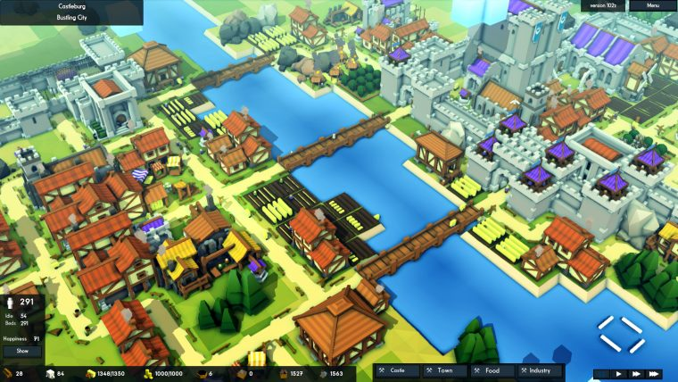

A Cidade das Equipas

Introdução
Imaginem que foram escolhidos para construir uma nova cidade, um lugar onde as pessoas possam viver felizes, em segurança e em harmonia com a natureza.
Uma cidade com casas, escolas, hospitais, estradas, jardins e espaços de lazer. Mas há um pequeno desafio: não podemos utilizar materiais novos! Teremos de dar uma nova vida àquilo que muitos consideram lixo.
O vosso desafio será transformar materiais recicláveis numa pequena cidade, utilizando a imaginação, a criatividade e o espírito de entreajuda.
Cada material terá o seu valor, cada ideia poderá fazer a diferença e cada participante terá um papel importante nesta missão.
Construir uma cidade não significa apenas juntar casas e edifícios. É preciso pensar nas necessidades das pessoas, na organização dos espaços e na proteção do ambiente.
Materiais necessários
Reúne os materiais e prepara-te para dar vida à tua cidade sustentável!
A cidade deve possuir
Estes são os espaços essenciais que a vossa cidade sustentável precisa de ter.
Mas existe um problema...
Durante a construção, o chefe começa a apresentar cartas-surpresa:
O grupo precisa de modificar a cidade para resolver o problema.